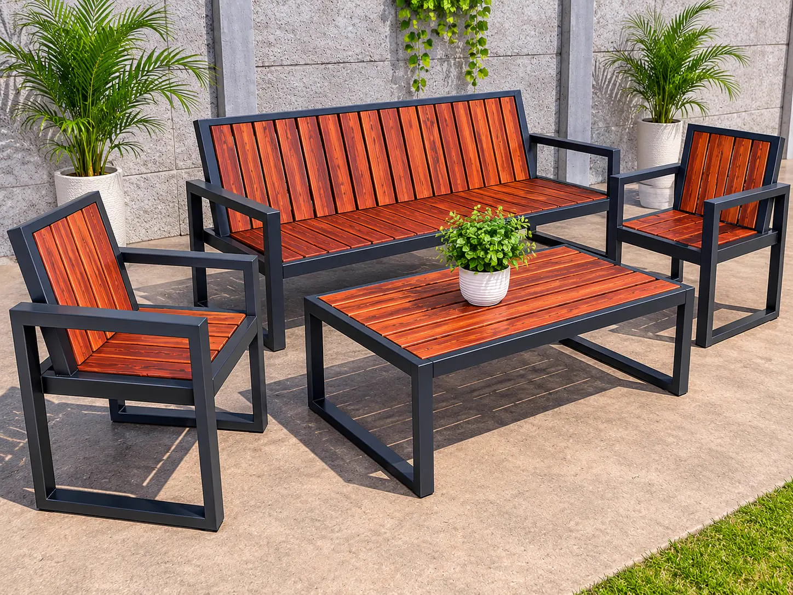
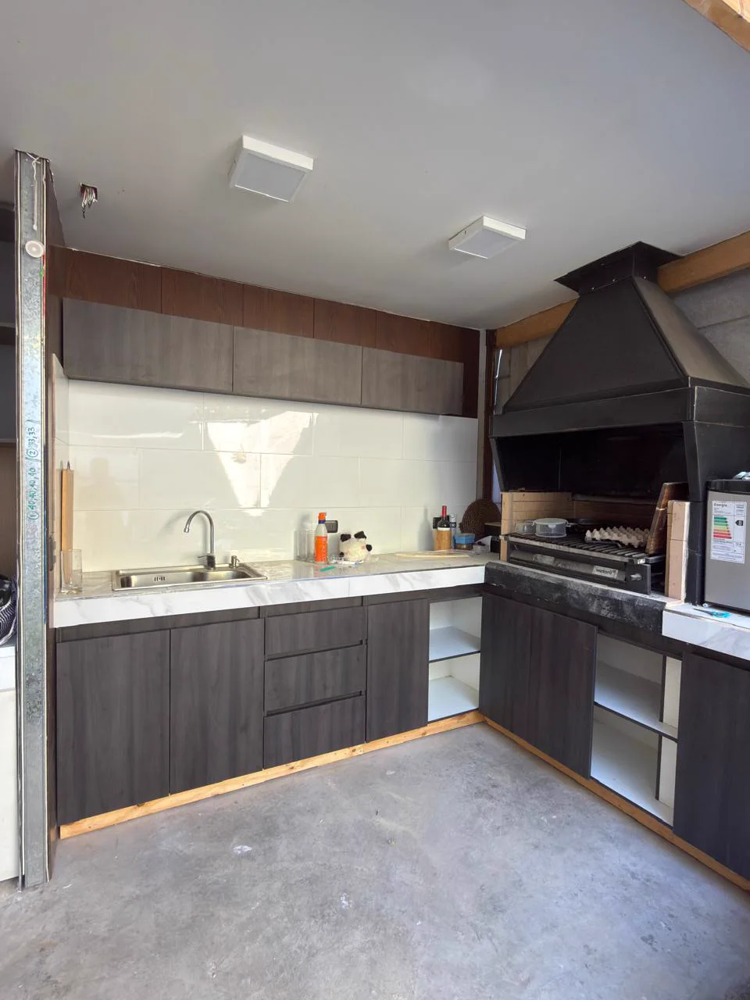

Cuéntanos qué imaginas
Describe tu espacio, el uso que quieres darle y tus ideas de referencia.

Tu hogar, a tu manera
Muebles estándar y proyectos a medida.
Encuentra el punto de partida para ese espacio
que tienes en mente.
Un mueble puede cambiar
cómo vives tu espacio.

Mobiliario a medida de FATCOMuebles a medida
Ese rincón que quieres aprovechar. La cocina que imaginas. Una forma distinta de organizar tu hogar.
Cuéntanos tu idea y consulta con FATCO las posibilidades de diseño, medidas y terminaciones.
Conversemos tu ideaConoce cómo iniciar tu proyectoMuebles FATCO
Conoce la línea estándar y los proyectos a medida.
Fotografías proporcionadas por FATCO.
Consulta formatos, medidas y disponibilidad.
Los nombres describen las piezas fotografiadas. Precios, disponibilidad, medidas y especificaciones se confirman directamente con FATCO.
Del proyecto al espacio
Una mirada al material compartido por FATCO.
Espacios reales, con su propia forma de ser.
Fotografías y videos entregados por FATCO. Amplía las imágenes y explora el recorrido del clóset sin salir de la página.
De una idea a una conversación
Este es el recorrido propuesto para cotizar.
Las etapas y condiciones finales se acuerdan con FATCO.
Describe tu espacio, el uso que quieres darle y tus ideas de referencia.
Consulta por medidas, materiales y terminaciones que se ajusten al proyecto.
Confirma el diseño, el presupuesto y los plazos antes de avanzar.
Coordina directamente con FATCO la ejecución, el despacho y la instalación que correspondan.
Somos FATCO Muebles
Muebles estándar y fabricación a medida: dos formas de encontrar una solución para tu espacio.
Conoce su presentación y una mirada al trabajo detrás de los muebles. Reproduce el video cuando quieras.
Presentación de FATCO · 29 segundos · Reproducción a tu elección
La voz de quienes nos eligen
Este espacio está reservado para
experiencias reales de clientes.
Los comentarios de Instagram se incorporarán únicamente con autorización de sus autores. Aún no hay testimonios autorizados para este prototipo.
Visitar el Instagram de FATCOHagamos espacio para tu idea
Un mueble, un rincón o un proyecto completo.
Cuéntanos por dónde quieres empezar.
Esta demostración prepara tu consulta y abre WhatsApp. No almacena tus datos ni envía mensajes automáticamente.